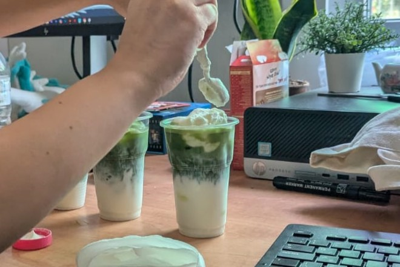
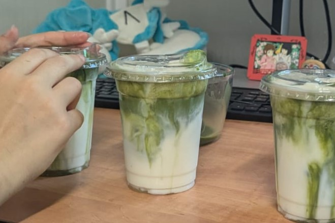
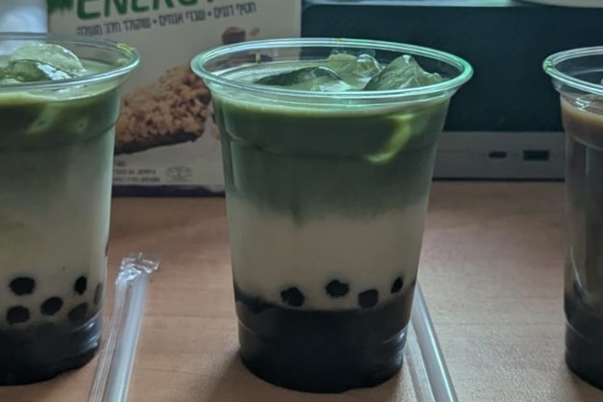
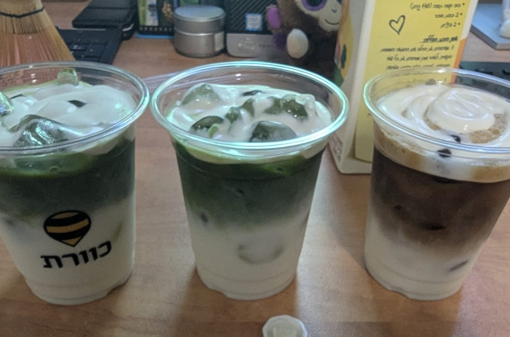
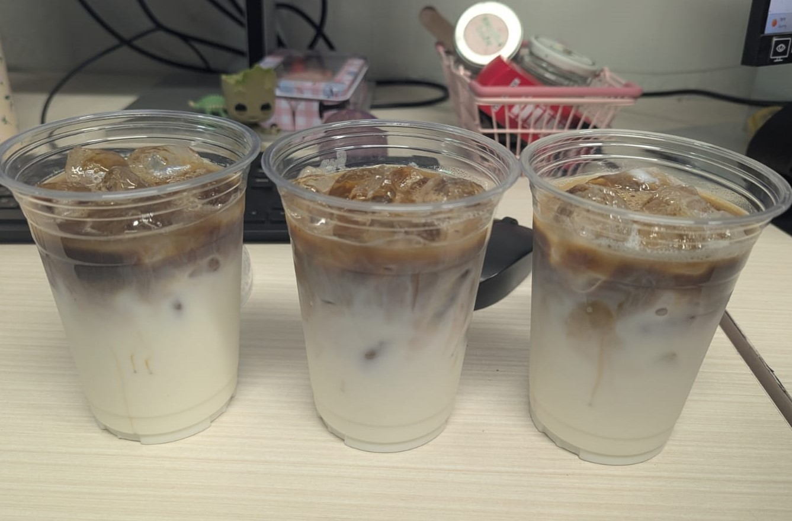
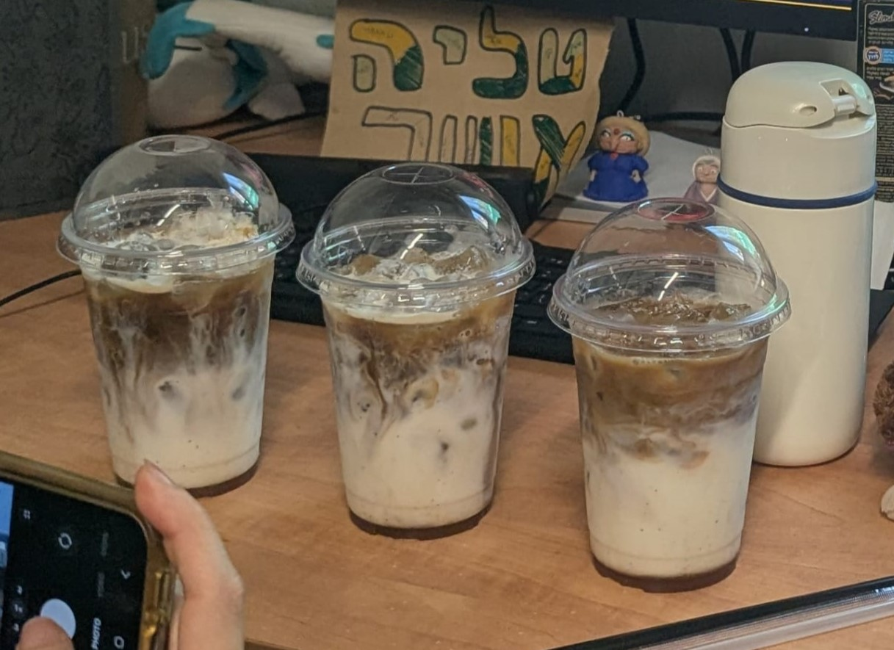

חיל המשא״ן · בה״ד 11
צוות ספארי
נעים להכיר! אנחנו צוות ספארי, משרתים בשלישות ברמת גן. באתר זה ריכזנו את הלומדות והתוצרים הדיגיטליים שלנו!
מלמן, ז"ל
העבודות שלנו
התוצרים שלנו
לומדות, תרגולים ותוצרים שפיתחנו.
החליקו בין הכרטיסים ←
✳מקום לתמונת תוצר
החליפו בצילום מסך
החליפו בצילום מסך
◇מקום לתמונת תוצר
החליפו בצילום מסך
החליפו בצילום מסך
○מקום לתמונת תוצר
החליפו בצילום מסך
החליפו בצילום מסך
רגעים בכוס
גלריית משקאות
✦✦✦

המאצ'ה הראשונה
01מאצ'ה עם חלב דל לקטוז ופאום וניל עם מלח ים
📅 תאריך הכנה:

מאצ'ה קר
02מאצ'ה עם חלב וניל ופאום וניל עם מלח ים
📅 תאריך הכנה:

מאצה וקפה עם בובה
03מאצ'ה\מאסטר קפה לאטה עם פניני טפיוקה רכות
📅 תאריך הכנה:

מאצה\קפה קר
03מאצ'ה/קפה מחליטת פולי קפה בברזיל - נס קפה, עם חלב דל לקטוז ופאום וניל עם מלח ים
📅 תאריך הכנה:

קפה קר
03קפה מחליטת פולי קפה בברזיל - נס קפה, עם חלב וניל
📅 תאריך הכנה:

דירטי צ'אי קר
03סירופ צ'אי ביתי, קפה מחליטת פולי קפה בברזיל - נס קפה וחלב דל לקטוז
📅 תאריך הכנה: